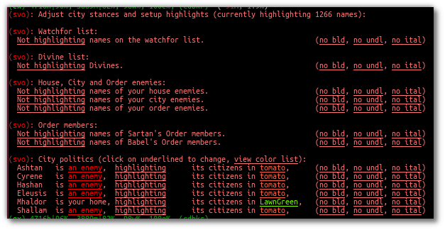

Svof NameDB¶
NameDB is a script whose job is to “know” people - who is a person, and what they are. With this in your toolbox, you, and your aliases/triggers/scripts, can tell people apart.
NameDB is a dataminer script that collects information either automatically or by you providing it, and then provides you the same information for use.
For you yourself, the script provides a sophisticated highlighting feature - that can highlight, bold, italicize or underline names. It can highlight a person by their citizenship, your city/house/order enemy status, or a special watchfor list you can manipulate. The highlighter “stacks” properly - if a person belongs to a group that should be underlined as well as to a group that should be in red, their name will be both underlined and in red. You can also ignore names you don’t want highlighted, so you don’t get Page, Chronos or May highlighted. All of this is configurable from your scripts or by hand, via an intuitive menu (vconfig politics):
For your triggers/aliases/scripts, there is a multitude of uses where this comes in handy. The most basic one is giving intelligence to your triggers - for example, if you want to make a trigger that will automatically tentacle enemies flying above you, with NameDB your script will know if it’s an enemy or not before tentacling - saving annoyances of your allies! If you only want to announce enemies or particular citizens to mindnet, you can. All that without manually managing lists of people - saves you a lot of hassle. You could even analyze and know exactly, at a glance, what classes a raiding group consists of with its help! These are just a few examples. NameDB can help you with a ton of things, including extracting names from lines and so on.
NameDB allows you to store your own notes on a person, as well as remembering their title, class, city, city rank, house, might, a custom importance level, their xp rank, and whenever they’re house/order or city enemies. You can also explicitly set them to be enemies or allies to you, or have that be auto-determined altogether (based on their citizenship or being enemied to your city/house/order).
NameDB is an addon for Svof, and it is included with all systems, for free. It is not designed to be stand-alone and is not sold or distributed separately.
Working with it¶
NameDB by default datamines any new names only it comes across from cw, hw, citizens, house/order/city enemies and qw lists (you can turn this off with vconfig autocheck off). It’ll automatically gag the honors of a person while doing that, so you don’t get spammed out - and it leaves the titles or guides/immortals intact, so you can tell when is the first time it notices them (as a little feature). You can enable/disable auto-honors with vconfig autocheck.
While NameDB automatically picks up the class of people from cwho and hwho lists, it’s impossible to find this out for others - so you’ll want to manually add the persons classes in with ndb set <person> class <class> if that’s something you’re interested in.
Other than that, once NameDB knows somebody, it’ll be helping you from there on - either with highlights or by allowing you to script with it. There are tons of places where your triggers could use help differentiating allies/friendlies, for example tarot/priest healing/shielding, automatically enemying enemies as you see them, enemy-only mindnet announces, and so on.
If you’d like to add gemmed/offline people to it, honors them manually (with the honors person syntax). You can also script the addition of them (or build an importer) with the ndb.addname(name) function.
| protip: | You can create custom highlighting categories by adding people to fake Orders (their validity isn’t checked, and everything/all options get auto-created for any order name). |
|---|
NameDB doesn’t highlight your own name so it won’t blend in, plus some people wouldn’t want to have it highlight. It’s fairly easy to add a highlight trigger in Mudlet if you want to see it highlighted - put your name in as the substring in a new trigger, and tick the highlight checkbox.
Your home city for vconfig politics is set via vconfig org <city>.
Pre-available data¶
NameDB doesn’t come with any data built-in, but Tanaar and Cooper have made their data available for download - Tanaar’s, Cooper’s and Cesarina’s. Importing data with ‘ndb import’ doesn’t clear the names you’ve had, it adds.
Scripting with it¶
To begin scripting with NameDB, check the API. There, all currently available functions are detailed to you, with practical examples that help you understand how to use them. If you need any help with them, feel free to ask on the Svof clan or Vadimuses about them.
NameDB is designed to be built upon and extended - feel free to use its building blocks to build upon it or expand it. As an example, check out the falcon glance report trigger in the Scripting Examples folder on how you can build upon it and use its features.
::note:: Do not use any of NameDB’s internal functions (that is, those not listed on API) in your scripts - they are not documented for a reason - they may be changed, or deleted altogether, breaking your scripts. The ones on the API won’t be (same with Svof API functions) - use those instead!
To query the database for data, make use of Mudlet’s db API.
Here are some practical examples:
-- print a list of all Ashtani CR4+'s known
vlua for _, person in pairs(db:fetch(ndb.db.people, {db:eq(ndb.db.people.city, "Ashtan"), db:gte(ndb.db.people.city_rank, 4)})) do print(person.name) end
Forcing an update on data¶
To update or add a person to NameDB, you can manually honors them. If you’d like to do it via scripting, the preferred way is to set the persons might xp rank to -1 (“unknown”) in the DB and raise a new data event. Here’s an example:
-- force an update on a single name, Bouff
local temp_name_list = { {name = "Bouff", xp_rank = -1} }
db:merge_unique(ndb.db.people, temp_name_list)
raiseEvent("NameDB got new data")
-- force an update on many names, from a list of names you've got
local names = {"Bouff", "Lianca", "Teela", "Malifuus"}
local temp_name_list = {}
for i = 1, #names do
temp_name_list[#temp_name_list+1] = {name = names[i], xp_rank = -1}
end
db:merge_unique(ndb.db.people, temp_name_list)
raiseEvent("NameDB got new data")
Examples¶
Several pre-made triggers that use NameDB already come provided for you in the Scripting Examples folder - to use them, drag them out of NameDB’s folders completely into your own, enable the triggers and optionally adjust them for yourself.
Incompatibilities¶
If you are syncing your Mudlet profile using Dropbox, make sure not to sync the Database_namedb.db file - Dropbox seems to corrupt it and make it inoperable.
Be wary of storing it on a Linux NFS share as well - that seems to present issues.
Troubleshooting¶
If your qwho-like aliases and any others that do anything with geography stop working, and you check the errors view to see mmp being mentioned, like so:
[ERROR:] object:<error in anonymous Lua function> function:<no debug data available>
<Lua error:[string "function mmp.echo(what)..."]:125: attempt to index local 'key' (a number value)>
The issue is with your mapper script (perhaps it is far outdated). Try reinstalling the latest one from here.
Future additions¶
NameDB opens up for a ton of possibilities to be improved upon. Here are some ideas I’ve got that’ll be added in the future:
- storing a persons max health and mana
- rogues as a category, so they can be highlighted
- a way to remember when you’ve last seen a person, and
- an option to highlight only recently seen people
- making all of whois clickable
- add a highlighting category for rogues and house members
- city allies tracking
- (done, qwc instead) qw <city> to check qw and have only known citizens of a particular city be highlighted
- add background highlighting for names
- add infamous tracking
If you’ve got more ideas, let me know. If you’d like to make any ideas happen yourself, you’re free to do so - the code is there.
Contributing to NameDB¶
All the code for NameDB is available for you to modify and improve upon. You do, however, assume the risk of breaking it on yourself by doing so!
Please contribute the changes you do to NameDB back, so they can be integrated with future releases and the wider community.
Aliases¶
- whois <person>
Gives you a a complete dossier on a person that NameDB knows of:
- vconfig politics
- Gives you a menu where you can adjust city relationship stances, and setup highlights.
- ndb
- NameDB alias cheetsheet - shows the same information as this aliases list. Hover your mouse or click on an alias to see the description.
- ndb long
- NameDB alias cheetsheet, with the descriptions expanded.
- vconfig autocheck yep/nope
- Sets whenever NameDB should automatically check new people it comes across to gather information about them or not. Most of the time this does grab their citizenship.
- vconfig usehonors yep/nope
- Sets whenever NameDB should use honors for checking names - honors allows qwm, qwi and qwic to work.
- vconfig autoclassset #
- Sets the amount of consecutive hits an opponents should do from a class before NameDB remembers them as that specific class. This is to prevent illusions easily messing with their known class.
- qw/qw2
Checks the QW list and records new adventurer names and their city affiliation for use in highlighting. NameDB uses the in-game ‘qwc’ command for this.
note: You need to have CONFIG MXP OFF in-game for the city affiliation capture to work - as the name highlighting done by the game here with MXP is different from elsewhere and isn’t supported by Mudlet. - qw update
- Re-checks all names on the QW list, even if they’re already and currently known - required
vconfig usehonorsto be on. - qwc
Checks the QW list and display you a menu of players present by their organization affiliation, sorted:
- qwm
- Shows ungemmed Marks on the QW list.
- qwic
- Shows ungemmed Infamous on the QW list.
- qwi
- Re-checks all people visible on the QW list and then shows the ungemmed Infamous.
- ppof <city>
- Checks QW list and citizens of a particular city to cc (so party or a clan, depends what you’ve set vconfig ccto to)
- ndb infamous
- Shows the list of known Infamous people from the database.
- house/order/city enemies
- Sets the enemy status of the people that NameDB knows of from those lists. This won’t auto-add names it doesn’t know for checking (so your db doesn’t get filled up with dormant people and they’ll be getting highlighted for no reason).
- house/order/city enemies add
- Sets the enemy status of the people from those lists, and auto-adds names it doesn’t know for checking.
- ndb honorsnew
- If vconfig autocheck is off, ndb honorsnew will allow NameDB to honors the new people it knows of.
- ndb cancel
- Stops honors’ing the list of people that need to be checked.
- npp
- Stops/resumes name highlighting. You might want to turn highlighting off for KoTHs, for example, where the game-provided colors are more important.
- npp on/off
- Stops/resumes name highlighting explicitly.
- vconfig highlightignore <person>
- Adds/removes a name on the list that keeps track of who should not be highlighted.
- vshow highlightignore
- Shows the list of persons who shouldn’t be highlighted.
- cw
- Appends class and Dragon information to each adventurer on the CW list, as well as providing a total summary of classes at the bottom. This looks best when Mudlets screenwidth is set to 100 in Mudlets settings (the games, as set via CONFIG, should be 0).
- iff <person> ally/enemy/auto
Explicitly sets a persons status to you, overriding the auto-determination of enemy vs non-enemy by NameDB.
Making them an ally will make NameDB disregard their citizenship and political stances and whenever they’re a house/order/city enemy - thus never considering them an enemy.
Making them an enemy will always consider them an enemy, disregarding anything else.
Setting it to auto will have NameDB compute their status to you depending on a number of things - if they’re in a city that is considered an enemy to you, or if they’re a house/city/order enemy, they’ll be considered an enemy. Otherwise, they won’t be an enemy.
- ndb set <person> notes <notes>
- Adjusts the notes you have on the person to the new ones. If you do whois person and click on ‘edit’, you an edit current notes you have on them. You can use the same color formatting from a cecho to color your notes (ie <red> text), and insert n’s in the same manner to get a linebreak.
- ndb export
- Opens up a menu where you can export your data. It allows you to selectively export fields (so you don’t have to share everything, for example, not your notes), and which people to export (atm, it’s everybody).
- ndb import
- Opens up a menu where you can import exported NameDB data. You can selectively choose which fields about a person should be imported - they will overwrite what you’ve had. This will not clear your names in NameDB that you’ve got already - if you’d like to start clean, use ‘ndb delete all’.
- ndb delete <person>
- Wipes an individual entry from NameDB.
- ndb delete all
- Wipes all data from the database, essentially making you start over clean. You have to use this alias twice for it to go off.
- ndb delete unranked
- Wipes all unranked - that is, newbies and older players - from NameDB.
- ndb update all
- Re-checks every person in the database. This can’t be undone, only paused (with ndb cancel) - NameDB will re-check everybody as you’ve asked it to, so don’t do it on a whim!
- ndb set <person> class <class>
- Manually sets/adjusts the persons class. It’s always stored in lowercase by NameDB. NameDB automatically picks up the class from cwho and hwho lists, but this isn’t possible for everyone.
- ndb set <person> city <city>
- Manually changes the persons city. It’s always stored in proper case (first letter capitalized) by NameDB. NameDB automatically picks it up from honors for you already.
- ndb set <person> title <title>
- Adjusts the persons title as NameDB knows it. It’s not really useful for much, as titles change all the time, but the option to set/retrieve them is there for you.
- ndb set <person> city_rank <rank>
- Manually adjusts the persons city rank. 0 is known, 1 is cr1 and 6 is cr6. NameDB automatically picks up the city rank from honors for you already.
- ndb set <person> house <house>
- Manually adjusts the persons House affiliation. NameDB can only capture this from hwho or house members, so you’d want to use this for setting others’ Houses if that’s something you want to track.
- ndb set <person> order <order>
- Manually adjusts the persons Order affiliation. NameDB stores it with proper titlecase, and it’ll pull information from ORDER MEMBERS for you. You will need to manually input the members of other Orders though.
- ndb set <person> might <might>
- Adjusts the persons might (lessons invested vs you) relative to you - 0 is 0% of your might, 100 is equal to you. -1 is unknown, and will cause NameDB to re-honors the person. NameDB automatically captures this from honors.
- ndb set <person> importance <number>
- Manually sets a persons “importance”. This isn’t used by NameDB, but it’s a way for you to explicitly prioritize people without relying on heuristics such as city rank and might.
- ndb set <person> xp_rank <number>
- Manually sets the persons rank in experience in the game. -2 is unranked, -1 is unknown - this’ll cause NameDB to auto-honors the person. Any other number is their actual rank. NameDB automatically captures this from honors.
- ndb set <person> immortal <yep/nope>
- Manually adjusts whenever somebody is an Immortal or not. NameDB automatically captures this from honors.
- ndb set <person> cityenemy/houseenemy/orderenemy <yep/nope>
- Manually sets whenever the person is your citys, houses or orders enemy. NameDB automatically captures this from the enemy lists, but you can adjust it manually as well.
- ndb stats
- A little stats alias showing the number of people known and city populations.
API¶
- ndb.isenemy(name)
Returns true if the person is your enemy - whenever they are explicitly marked as one via iff <name> enemy> or they are in a city that you are at war with per vconfig politics, or they are a city, house or order enemy.
This function is useful to use in auto-action triggers, for example only tentacle your enemies and not everybody:
if ndb.isenemy(matches[2]) then if svo.defc.dragonform then svo.doadd("becalm") else svo.doadd("touch tentacle " .. matches[2]) end end
Or automatically pick up monolith sigils and enemy drops:
-- pattern (perl regex): ^(\w+) drops a monolith sigil\.$ if ndb.isenemny(matches[2]) then svo.doaddfree("get monolith") end
Or only announce enemies on mindnet:
if ndb.isenemy(matches[2]) then svo.cc("%s has entered %s!", matches[2], gmcp.Room.Info.area) end
- ndb.isperson(name)
Returns true if the given name is one NameDB knows of.
This function is useful for making your attacks differentiate between PvP and bashing, as one example:
send("smite "..target, false) if ndb.isperson(target) and not svo.inslowcuringmode() then send("chasten "..target, false) end
In another example, you could automatically enemy in your target alias:
target = matches[2] if ndb.isperson(target) and not svo.inslowcuringmode() then send("enemy "..target) end
- ndb.exists(name)
- Returns true if the given character name exists as NameDB knows it.
- ndb.getname(name)
Returns a table with all information known about a name - useful to use if you want to check multiple fields of a person.
Here’s an example that shows the persons class, house and city at once:
local person = ndb.getname("Vadimuses") -- if ndb doesn't know the person, it'll return nil, so handle that if not person then svo.echof("I'm afraid I don't know Vadimuses yet.") return end svo.echof("Vadimuses's class that we know of is %s, and he's a %s in %s.", person.class, person.guild, person.city)
- ndb.findname(line)
- Given a line, returns the first character name it finds on it.
- ndb.findnames(line)
- Given a line, returns a list of known character names found on it. If no names are found, it returns nil.
- ndb.isclass(name, class)
Returns true if the given person is known to be of that class.
An example of use:
-- on a trigger where the person lands in your room if ndb.isclass(matches[2], "monk") then svo.echof("Watch out! This might be a deliverance trick!") end
- ndb.getclass(name)
- Returns the known class of a person. If the person isn’t known, it returns nil - and if the class isn’t known, it returns “”.
- ndb.setclass(name, class)
- Sets the class on a given person.
- ndb.getxprank(name)
- Returns the XP rank a person. If the person isn’t known, it returns nil. If the rank isn’t known, it returns -1, and if the person is unranked, it returns -2.
- ndb.getcity(name)
Returns the known city of a person. If the person isn’t known, it returns nil - and if the city isn’t known, it returns “”.
-- check if somebody is from a particular city. The city name should be capitalized if ndb.getcity(matches[2]) == "Cyrene" then
- ndb.isashtani(name)
- ndb.iscyrenian(name)
- ndb.iseleusian(name)
- ndb.ishashani(name)
- ndb.ismhaldorian(name)
- ndb.istargossian(name)
- ndb.iscyrenian(name)
Convenience functions, return true if the person belongs to the given city. You might want to use ndb.isenemy() when checking for enemies instead, as then you can configure which citizens you consider your enemies to be via a menu, instead of having to change all your code.
Here are some examples:
if ndb.ismhaldorian(matches[2]) then if not ndb.iseleusian("Bob") then
- ndb.gethouse(name)
Returns the known House of a person. If the person isn’t known, it returns nil - and if the house isn’t known, it returns “”.
-- check if somebody is from a particular house. The house name should be capitalized if ndb.gethouse(matches[2]) == "Sentinels" then
- ndb.getnotes(name)
- Returns the notes that you’ve stored about a person - or “” if you haven’t got any.
- ndb.ismark(name)
Returns true or the mark type depending on whenever the person is a known Mark. If the person isn’t known, it returns nil.
-- see if a given person is a Mark local ismark = ndb.ismark("Vadimuses") if ismark then svo.echof("Vadimuses is a "..ismark.." mark!") end
- ndb.setmark(name, type)
Sets whenever a person is a Mark or not. If they’re a mark, then supply the type -
IvoryorQuisalis(make sure to capitalise).-- remove Bob's mark status, he couldn't handle the pressure ndb.setmark("Bob", false) -- set Amy to be an Ivory mark ndb.setmark("Amy", "Ivory")
- ndb.isinfamous(name)
- Returns -1 if unknown, 0 if not infamous, 1 if nearly infamous, and 2-7 for the various levels of infamy.
- ndb.isdragon(name)
Returns true or false depending on whenever the person is a known Dragon. If the person isn’t known, it returns nil.
-- see if a given person is a Dragon if ndb.isdragon("Vadimuses") then svo.echof("Vadimuses is a Dragon!") end
- ndb.setdragon(name, status)
Sets whenever a person is a Dragon or not. The status can be a true/false boolean or a string affirmation (yep/nope and so on) value.
ndb.setdragon("Vadimuses", true) ndb.setdragon("Vadimuses", "yep") ndb.setdragon("Unnamednewbie", false) ndb.setdragon("Unnamednewbie", "nope")
- ndb.setiff(name, status)
Adjusts
iff(see theiffalias) of a person. Status can beauto,allyorenemy.-- we don't like Bob anymore. Set him to be treated as an enemy now by ndb.isenemy() ndb.setiff("Bob", "enemy")
- ndb.isimmortal(name)
- Returns true or false depending on whenever the person is a known Immortal (that is - Guide, God or Celani).
- ndb.getpluralcity(city, count)
Given a city affiliation and a number of citizens from it, returns either the singlar or plural variation of the city name.
-- the following will say: There are 5 Ashtani local city, amount = "Ashtan", 5 svo.cc("There are %s %s", amount, ndb.getpluralcity(city, amount)) -- the following will say: 1 Cyrenian local city, amount = "Cyrene", 1 svo.cc("%s %s", amount, ndb.getpluralcity(city, amount))
- ndb.getcolor(name)
Returns you the cecho color for the given persons name, or ‘’ if there is none (they aren’t highlighted). You can use this to make echoes where peoples names are colored as they would be by NameDB.
-- you can insert the color as a variable, between ..'s: cecho("Highlights: "..ndb.getcolor("Tanaar").."Tanaar<a_grey>, "..ndb.getcolor("Vadimuses").."Vadimuses") -- or be a bit more fancy about it, using string.format to insert the color: for _, name in ipairs({"Tanaar", "Vadimuses", "Lynara", "Kard", "Seragorn"}) do cecho(string.format("Name in color: %s%s\n", ndb.getcolor(name), name)) end
- ndb.getcolorp(name)
- Returns you the foreground color that the person would be highlighted as, if they are meant to be. If they aren’t meant to be highlighted or the person isn’t known, returns nil.
- ndb.shouldbold(name)
Returns true if the persons name would be bolded by NameDB, or false otherwise. This would be helpful to use in conjunction with setBold().
-- enables or disables bolding, depending whenever Aradors name is bolded by NameDB setBold(ndb.shouldbold("Arador")) echo("Arador") resetFormat()
- ndb.shoulditalicize(name)
Returns true if the persons name would be italicized by NameDB, or false otherwise. This would be helpful to use in conjunction with setItalics().
-- enables or disables undernlined text, depending whenever Aradors name is italicized by NameDB setItalics(ndb.shoulditalicize("Arador")) echo("Arador") resetFormat()
- ndb.shouldunderline(name)
Returns true if the persons name would be underlined by NameDB, or false otherwise. This would be helpful to use in conjunction with setUnderline().
-- enables or disables undernlined text, depending whenever Aradors name is underlined by NameDB setUnderline(ndb.shouldunderline("Arador")) echo("Arador") resetFormat()
- ndb.iscityenemy(name)
- Similar to ndb.isenemy - but ignores whenever someone is a house enemy or not. So it checks everything else that ndb.isenemy checks (citizenship, iff, and city) while ignoring the status of someone being your House’s enemy.
- svo.config.set(“ndbpaused”, option, true)
- Disables or enables NameDB highlighting (same as what the
nppalias does).optionis a toggle in the same manner assvo.config.set()operates - it can betrue,false,"on","off"and so on. The last argument,true, has to be there for the function to take effect.